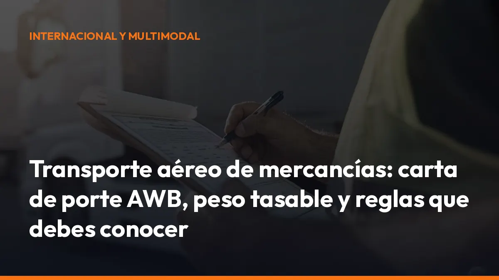

Transporte aéreo de mercancías: carta de porte AWB, peso tasable y reglas que debes conocer

Pero la velocidad tiene un precio: más controles, más documentación y una tarificación muy distinta a la del transporte por carretera o marítimo.
Si quieres evitar retrasos, sobrecostes o rechazos en el aeropuerto, debes controlar cinco elementos:
- Carta de porte aéreo AWB.
- Peso tasable o volumétrico.
- Agente IATA y seguridad de la carga.
- Mercancías peligrosas y normativa IATA DGR.
- Coordinación entre avión, carretera y aduanas.
Aquí tienes las particularidades que debes conocer antes de contratar o gestionar un envío aéreo.
¿Qué es el transporte aéreo de mercancías?
El transporte aéreo de mercancías consiste en trasladar productos por avión entre dos aeropuertos, normalmente con una recogida y una entrega final por carretera.
Es una solución especialmente útil para:
- Componentes industriales urgentes.
- Productos farmacéuticos y sanitarios.
- Recambios críticos.
- Electrónica y mercancía de alto valor.
- Envíos internacionales con plazos muy ajustados.
- Productos perecederos o sensibles a la temperatura.
Su principal ventaja es clara: reduce los tiempos de tránsito.
Su principal inconveniente también: el coste por kilogramo es superior al del transporte marítimo y, en muchos casos, al del transporte terrestre.
Por eso, no siempre debes enviar toda la carga por avión. Utiliza el transporte aéreo cuando el ahorro de tiempo compense la diferencia de precio.
La carta de porte aérea AWB es el documento central
La AWB (Air Waybill) es la carta de porte aéreo. Acredita el contrato de transporte entre el expedidor y la compañía aérea, y confirma que la aerolínea o su agente ha recibido la mercancía.
No es un título de propiedad ni un documento negociable. Su función es documentar el transporte, indicar las condiciones del envío y permitir que todas las partes trabajen con la misma información.
En la AWB deben aparecer, entre otros datos:
- Expedidor: quién envía la mercancía.
- Consignatario: quién debe recibirla.
- Aeropuerto de origen y destino.
- Descripción de la carga.
- Número de bultos.
- Peso bruto y peso tasable.
- Tipo de servicio y condiciones especiales.
- Instrucciones de manipulación.
- Información sobre mercancías peligrosas, cuando corresponda.
En una operación consolidada puedes encontrar dos documentos:
- MAWB: carta de porte principal emitida para la compañía aérea.
- HAWB: carta de porte emitida por el transitario para cada cliente o envío incluido en la consolidación.
Un error en la dirección, el peso, la descripción o la documentación puede provocar una inspección adicional o que la carga no sea aceptada.
Revisa la AWB antes de cerrar el envío y guarda una copia digital accesible desde el móvil. Con Mi Carga puedes centralizar la documentación del transporte y evitar que los papeles se queden dispersos entre correos, carpetas y teléfonos.
Peso tasable: pagarás por el peso real o por el espacio ocupado
En carga aérea no siempre pagas por el peso que marca la báscula.
La aerolínea compara dos valores:
1. Peso bruto: lo que pesa realmente la mercancía con su embalaje. 2. Peso volumétrico: el peso equivalente al espacio que ocupa.
El peso tasable o chargeable weight será el mayor de los dos.
Cómo calcular el peso volumétrico
La fórmula habitual para transporte aéreo es:
Largo × ancho × alto en centímetros ÷ 6.000
Por ejemplo, para un bulto de:
- Largo: 120 cm.
- Ancho: 80 cm.
- Alto: 120 cm.
El cálculo sería:
120 × 80 × 120 ÷ 6.000 = 192 kg Si el peso real del bulto es de 150 kg, el peso tasable será de 192 kg, porque ocupa más espacio del que refleja su peso físico.
Si el peso real fuera de 220 kg, pagarías sobre 220 kg.
Esta regla evita que una carga muy ligera pero voluminosa ocupe una gran parte de la capacidad del avión sin reflejarlo en el precio.
Qué debes comprobar antes de pedir presupuesto
Antes de solicitar una cotización, prepara:
- Medidas exteriores de cada bulto.
- Peso bruto de cada unidad.
- Número total de bultos.
- Tipo de embalaje.
- Posibilidad de apilado.
- Necesidades de temperatura o manipulación.
- Aeropuerto de origen y destino.
No solicites un precio únicamente con los kilogramos reales. Si no aportas las medidas, el presupuesto puede cambiar cuando la aerolínea calcule el peso tasable.
Agente IATA: más control y menos errores en la gestión
Un agente IATA es un transitario o intermediario acreditado para gestionar operaciones de carga aérea con compañías aéreas bajo los procedimientos aplicables del sector.
Su trabajo puede incluir:
- Preparar o emitir la documentación de transporte.
- Reservar espacio en vuelos.
- Calcular el peso tasable.
- Coordinar la consolidación de mercancías.
- Revisar requisitos de seguridad.
- Gestionar documentación de mercancías peligrosas.
- Coordinar aduanas, handling y entrega terrestre.
IATA no sustituye a las autoridades aeronáuticas. Sus reglamentos y estándares se aplican junto con la normativa internacional, europea y nacional correspondiente.
Cuando trabajes con un agente, pídele que te confirme por escrito:
- Qué incluye el precio.
- Qué recargos se aplican.
- Quién prepara la AWB.
- Quién responde ante un rechazo documental.
- Qué operador realiza la recogida y la entrega.
- Qué requisitos necesita la mercancía.
Solicita una cotización desglosada. Así podrás comparar opciones sin confundir un precio básico de flete con el coste total puerta a puerta.
Seguridad de la carga aérea: el envío debe estar protegido
La carga aérea está sometida a controles de seguridad específicos. No se trata solo de comprobar que el bulto está bien embalado.
La cadena de seguridad puede incluir:
- Control de acceso a las instalaciones.
- Identificación del expedidor.
- Revisión de la mercancía.
- Inspección mediante equipos de seguridad.
- Control de la documentación.
- Custodia durante la preparación y el transporte.
- Entrega a un agente acreditado o transportista autorizado.
En España, AESA regula y explica los requisitos de seguridad de la carga aérea, incluyendo las figuras del Agente Acreditado, el Expedidor Conocido y los transportistas autorizados.
La finalidad es mantener la carga protegida desde su preparación hasta su entrega al operador aéreo.
Si la mercancía no cumple los requisitos de seguridad, puede sufrir:
- Inspecciones adicionales.
- Demoras en la aceptación.
- Cambios de vuelo.
- Costes de manipulación.
- Rechazo del envío.
Prepara la carga con antelación y confirma quién mantiene la cadena de seguridad.
Mercancías peligrosas: IATA DGR no es lo mismo que ADR
Las mercancías peligrosas transportadas en avión deben cumplir la normativa IATA DGR (Dangerous Goods Regulations) y las instrucciones técnicas aplicables al transporte aéreo.
La IATA DGR establece requisitos sobre:
- Clasificación de la mercancía.
- Número ONU.
- Denominación oficial de transporte.
- Clase de peligro.
- Grupo de embalaje.
- Instrucciones de embalaje.
- Cantidades máximas.
- Marcado y etiquetado.
- Documentación.
- Restricciones para aviones de pasajeros o exclusivamente de carga.
Cuando el envío lo exige, también tendrás que preparar la Declaración del Expedidor de Mercancías Peligrosas (Shipper’s Declaration).
Consulta siempre la información oficial de IATA sobre mercancías peligrosas y la información de AESA sobre mercancías peligrosas por vía aérea.
¿Dónde entra el ADR?
El ADR regula el transporte de mercancías peligrosas por carretera. La IATA DGR regula el tramo aéreo.
Por tanto, si realizas una operación desde un almacén en España hasta un aeropuerto y después envías la mercancía por avión, pueden aplicarse ambos marcos:
- ADR: recogida y entrega por carretera.
- IATA DGR: tramo aéreo.
- Normativa aduanera: cuando existe exportación, importación o tránsito internacional.
El ADR no sustituye a la IATA DGR. Un embalaje válido para carretera puede no ser aceptado en avión.
Revisa el envío por cada modo de transporte antes de cargarlo. Para el tramo terrestre, consulta también el marco ADR 2025 publicado por UNECE.
Plazos y costes: rapidez, pero con más variables
Un envío aéreo urgente puede moverse en plazos de 24 a 72 horas, aunque el tiempo total depende de:
- Recogida en origen.
- Consolidación.
- Disponibilidad de vuelo.
- Escalas.
- Controles de seguridad.
- Aduanas.
- Entrega final.
- Tipo de servicio contratado.
No confundas el tiempo de vuelo con el plazo puerta a puerta. La mercancía también necesita ser recogida, aceptada, inspeccionada, descargada y entregada.
El precio suele incluir varios conceptos:
- Flete aéreo por peso tasable.
- Recargo de combustible.
- Seguridad.
- Handling aeroportuario.
- Emisión de AWB.
- Despacho de aduanas.
- Almacenamiento.
- Entrega terrestre.
- Tratamiento especial.
- Recargo por mercancía peligrosa.
- Seguro de transporte.
Pide siempre el precio total y la fecha de entrega prevista. Un flete barato puede no incluir la última milla, los trámites aduaneros o los recargos de seguridad.
El transporte aéreo dentro de una cadena intermodal
El avión rara vez trabaja solo. Lo habitual es combinar varios medios:
1. Recogida por carretera. 2. Preparación y consolidación en terminal. 3. Transporte aéreo. 4. Despacho de importación. 5. Entrega final por carretera. Esta combinación permite utilizar la carretera para la flexibilidad y el avión para la velocidad.
La documentación debe acompañar el envío durante todo el recorrido. Si falta un documento en la recogida o los datos no coinciden con la AWB, el problema puede detener toda la cadena.
Checklist antes de enviar mercancía por avión
Comprueba estos puntos:
- Medidas: calcula el peso volumétrico.
- Peso: confirma el peso bruto de cada bulto.
- AWB: revisa expedidor, destinatario, ruta y mercancía.
- Embalaje: utiliza un embalaje adecuado para manipulación aeroportuaria.
- Seguridad: confirma el operador responsable.
- Mercancías peligrosas: revisa IATA DGR y ADR si hay carretera.
- Aduanas: prepara factura, lista de contenido y documentos necesarios.
- Plazo: separa tiempo de vuelo y plazo puerta a puerta.
- Coste: exige una oferta con todos los recargos.
- Archivo: guarda toda la documentación en formato digital.
No dejes esta revisión para el momento de la carga. Genera, firma y comparte tus documentos directamente desde el móvil con Mi Carga.
Gestiona tu documentación sin complicaciones
El transporte aéreo exige precisión. Una AWB incorrecta, un peso mal calculado o una mercancía peligrosa sin declaración puede costarte tiempo y dinero.
Con Mi Carga puedes emitir y conservar la documentación del transporte de forma digital, con trazabilidad y acceso desde cualquier lugar.
Portes ilimitados. Modo sin conexión. Trazabilidad ROTT. Puedes activar tu suscripción por:
10 € al mes + IVA
o
90 € al año + IVA
Si sois varios conductores, solicita un presupuesto cerrado para tu empresa.
Empieza hoy, guarda tus documentos al instante y evita que una incidencia administrativa retrase tu carga. ¿Hablamos?
Genera tus 10 primeros documentos gratis con Mi Carga
DeCA, carta de porte y ADR, en PDF, con QR y archivo automático en la nube.
Empezar con 10 documentos gratisArtículo informativo. Consulta siempre el caso concreto de tu operación. ¿Dudas? Escríbenos.